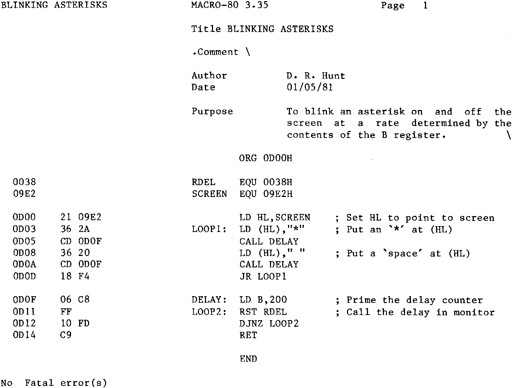

Now, I’ve cheated, I don’t intend to repeat the mistake I made in part 3, so
I’ve used an assembler. Now it’s not one of the ones you can buy for a normal Nascom,
it’s disk based, and has some special features. The only reason I’ve used it instead
of my ZEAP, is that my Nascom is all set up for disks, and unlike Mr. Bowden
(issue 3 page 27),
my Nascom is not multi-mapped, and it’s one hell of a hassle to set it all
up for ordinary NAS-SYS working. So I must explain some of the differences as well as
give a brief run down on assemblers in general.
So, an assembler is a program, it takes the mnemonics you feed it, and turns
them into the appropriate machine codes. Same as looking the codes up in the book, but
faster. Assemblers can be very very fast, (some are just fast), and will beat writing
it all down on your Woolies Jumbo pad any time. They have one major advantage over
doing it by hand, (apart from speed). Lets suppose we wanted to add one extra line
right in the middle of a program, all the absolute jumps and all the calls after the
insertion would have to be changed, because all the absolute addresses would have been
moved up by the insertion. In a large program these might run into a hundred or more.
It’s a mind bending chore doing it by hand (although all of us who had Nascoms before
the assemblers came along, managed it). Now, see the advantage of labels for calls and
jumps, you see, until it’s time to actually assemble the program these aren’t absolute
addresses, they are just locations –– well –– er, labeled. Do you see what I am
getting at? Inserting the odd line here and there doesn’t change the label, it simply
changes its final location at assembly time. Everything is referenced to the labels,
not absolutes, so insertions (or deletions) don’t matter.